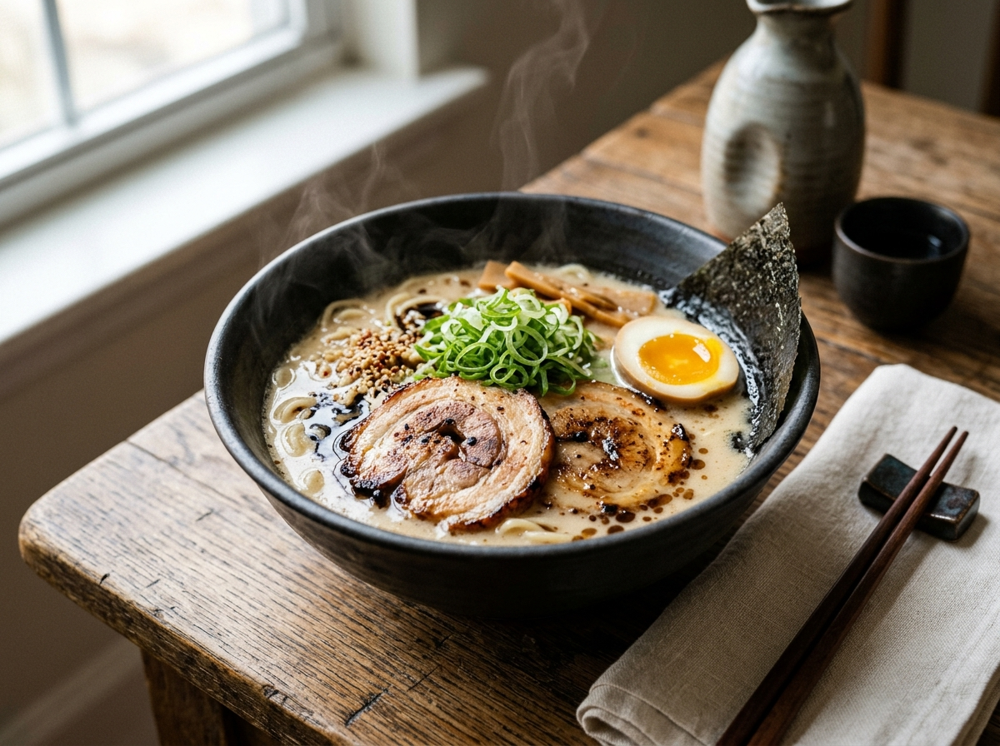

VOL. 14 · 本週麵食精選
濃郁蒜香
豚骨叉燒拉麵
以焦香黑蒜油點綴乳白醇厚的豚骨湯底，搭配低溫慢滷的炙燒叉燒、半熟溏心蛋與彈牙細拉麵。在家也能用精準的計時與火候，端出一碗撫慰身心的職人拉麵。
NOODLE RECIPE INDEX
麵食食譜目錄
涵蓋泡麵創意、日式拉麵、家常拌麵與義式經典，點擊即可換算份量與啟動煮麵計時。
CULINARY NOTES
為日常下廚而設計的手帖
01
彈性份量換算
無論是一人獨享的深夜晚餐，還是週末六人的朋友聚會，只需輕點加減號，所有食材比例立即精準換算。
02
備料與步驟勾選
在流理台前不再手忙腳亂。逐項勾選已備妥的食材與完成的步驟，讓烹飪節奏從容而優雅。
03
隨行步驟計時器
需要燉煮、烘烤或靜置的關鍵步驟皆內建一鍵計時，時間一到將以柔和鈴聲提醒您。